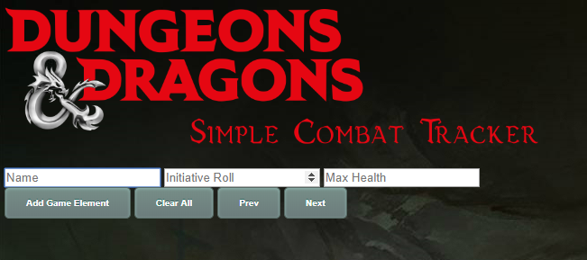
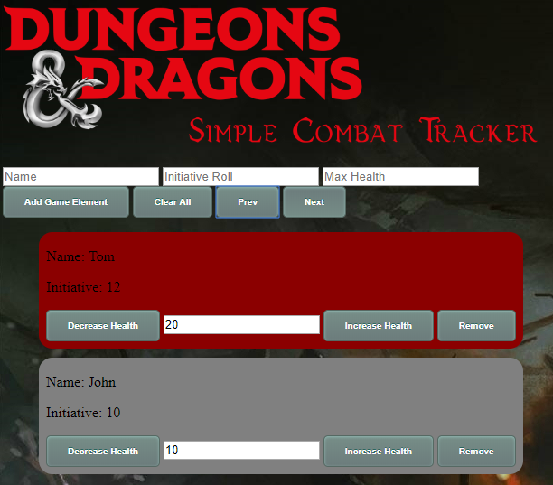
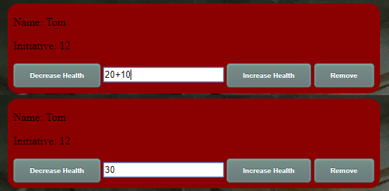

Welcome to Dungeon and Dragons simple combat tracker. This site serves as a simple way of tracking health and combat turns without the need for pen and paper or a spreadsheet
If you have any issues or suggestions please log them here
To begin type in the character or NPC name, inititive roll and max health then click Add Game Element
Once you have added all the characters and NPCs, you can select the characters (coloured red) whos current turn it is by click Prev/Next or by pressing up/down keys. 
You can now alter the health of each character by either pressing increase/decrease health or typing in the helath. It is also possible to perform addition or subtraction on the health, append the value with + or - then press enter as shown below:
